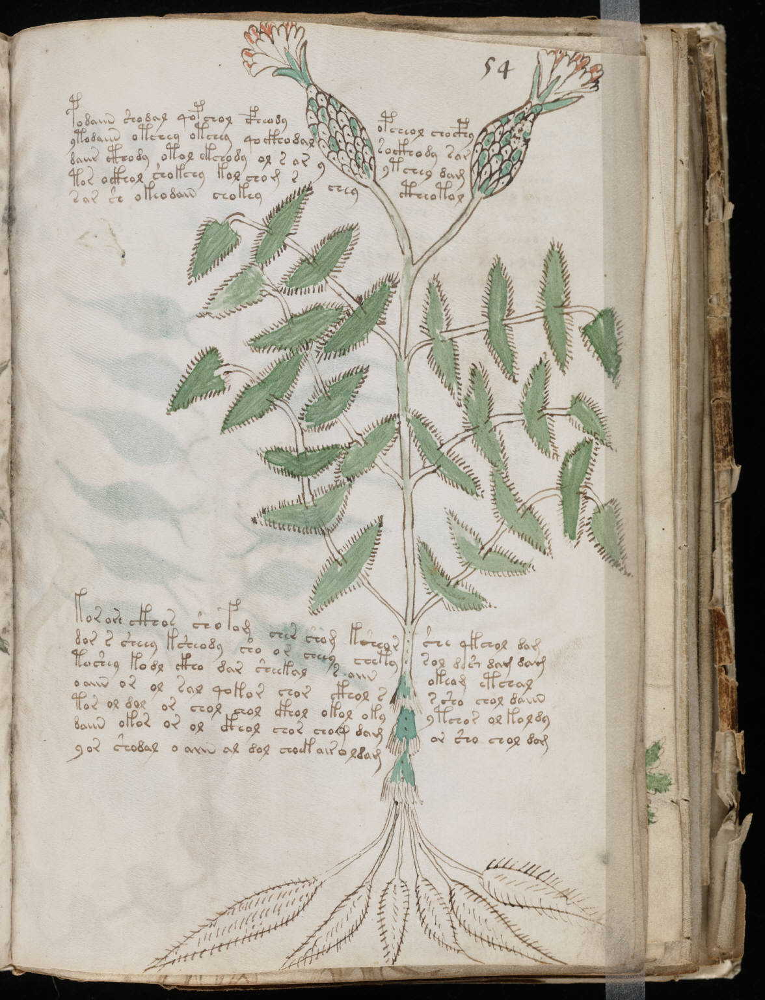

f54r
1podaiin shodal qopchol cfheodyopcheol chocphy2ytodaiin otchey otchey qockho dalsockhody sar3daiir cthody otol ekchody ol s or yytchey dam4tor ockhol shokchy kol chom scheyctheotol5sar sh okeodaiin chokey6korare ckhos shofom cher cham kcheorshs qckheol dom7dor s sheey ksheody sho or cheey chetysol dsh dam dam8toshey kodl ckho dar sheekal s aiinokeom etchal9o aiin or ol sal qokor chor ckhol ss sho chol daiin10tor ol dol or chol chol ckhol okol okyytchor ol koldy11daiin okor or ol ckhol chor chom damor sho chol dam12yor shodal o aiin al dol choek air oldam
